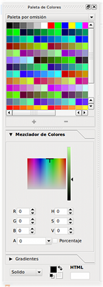
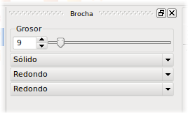
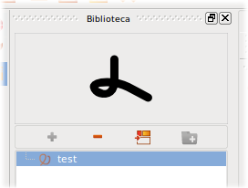
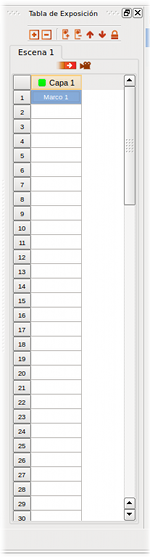

Fig #14. Área de Trabajo
Módulo de Ilustración
En este módulo pasarás la mayor parte del tiempo cuando te encuentres trabajando con Tupí, sabes por qué? aquí es donde construyes cada marco de tu animación y para ser más exactos, cada línea de cada personaje y de cada pieza del escenario en el que quieras contar tu historia.
Dicho en otras palabras, si por ejemplo, quieres crear la animación de un personaje caminando por una calle, es en esta pestaña donde deberás diseñar al personaje y a cada una de las posiciones en las que este aparecerá mientras se mueve:
Fig #13. Interfaz del Módulo de Ilustración
Tip: Cada vez que desees consultar el Módulo de Ilustración, sólo debes presionar la tecla F9.
En la sección anterior, dimos un vistazo a los componentes más generales de la interfaz de Tupí. Ahora demos una mirada un poco más detalla a cada recurso disponible desde este módulo:
1. Área de Trabajo
Piensa en el Área de Trabajo como un lienzo en blanco, el espacio del que disponemos para realizar las ilustraciones de cada uno de los marcos que harán parte de la animación. Cuenta con dos reglas guías en el borde superior y en el izquierdo. En el centro, cuenta con una forma rectangular de fondo blanco que simboliza las dimensiones del marco, o si lo prefieres, tu "hoja de papel".
Al lado derecho encontraremos un panel dinámico que contiene las propiedades de la herramienta que se encuentre seleccionada en ese momento y en la parte inferior, un pequeño conjunto de controles relacionados con el Área de Trabajo.
Tip: Aquello que no dibujes dentro del marco, no será visible en la animación.
Fig #14. Área de Trabajo
2. Panel Superior de Funciones de Edición
Ubicado en la parte superior izquierda, sobre el Área de Trabajo, este panel ofrece todas las funcionalidades básicas de edición usuales al momento de trabajar sobre una ilustración: Hacer, Deshacer, Copiar, Pegar, Cortar, Eliminar, Agrupar y Desagrupar.
Adicionalmente, ofrece dos opciones complementarias muy útiles: una Malla Guía para el ilustrador, que puede activarse o desactivarse a voluntad, y el control del Papel Cebolla, funcionalidad que nos permite convertir el marco actual en semi-transparente, con el fin de ver los dibujos que tenemos tanto en marcos anteriores, como en marcos posteriores. En la sección "Hagamos un ejemplo!" profundizaremos en el uso de esta última opción.

|

|
Fig #15. Panel Superior de Funciones de Edición
3. Panel de Herramientas
Este panel, se encuentra ubicado al borde izquierdo del Área de Trabajo y nos provee de todas las herramientas necesarias para dibujar y realizar operaciones especiales sobre nuestra ilustración. Cada recurso se encuentra agrupado según su naturaleza en los siguientes sub-menús:

|

|
Fig #16. Panel de Herramientas
4. Barra Lateral Izquierda
Paleta de Colores
Como su nombre lo indica, este es el panel en donde escogemos el color con el que queremos trazar, independiente de la figura o forma que estemos trabajando. Es importante tener en cuenta que mientras no modifiquemos el color actual, absolutamente todo lo que dibujemos conservará ese mismo color, hasta que seleccionemos uno diferente.
|  |

|
Fig #17. Paleta de Colores
Tip: Ten en cuenta que además de utilizar colores homogéneos, también puedes utilizar Gradientes, es decir, conjuntos de colores que se mezclan de manera progresiva sobre una misma figura, como en el siguiente ejemplo, en donde el gradiente comienza en un verde luminoso y termina en negro:

Fig #18. Ejemplo de Gradiente
Propiedades de Brocha
La Brocha en nuestro contexto, es el tipo de herramienta que usas para dibujar. Si quieres, puedes pensar en la Brocha como el tipo de punta que le vas a poner a tu lápiz. Este panel nos permite modificar características de la brocha, como su grosor, el tipo de bordes para los extremos de los trazos y la continuidad de la línea (por ejemplo, puedes realizar trazos punteados, si lo deseas).
|  |

|
Fig #19. Propiedades de Brocha
Librería de Objetos
La función de este componente, es permitirnos almacenar una copia de aquellas figuras o imágenes que hacen parte de nuestro proyecto y que nos interesa volver a utilizar en otros marcos de la misma animación o de otro proyecto. Este recurso es muy útil en animaciones donde sabes que algunos de los componentes que ya dibujaste van a aparecer una y otra vez.
|  |

|
Fig #20. Librería de Objetos
5. Barra Lateral Derecha
Administrador de Escenas
Sabes qué es una escena? Tratemos de dar una definición sencilla: piensa en una película o en un comercial de TV, has notado que siempre se componen de pequeños fragmentos ordenados de tal forma que cuentan una historia? Estos fragmentos suelen ser reconocidos con facilidad por los cambios en la posición de la cámara o el punto de vista del espectador, osea tú.
Teniendo claro este concepto, resulta fácil describir este componente: a través de este panel vamos a poder crear y eliminar cada una de las escenas que queremos incluir en nuestro proyecto de animación.
Tip: Es importante que antes de empezar con tu proyecto de animación, tengas muy claro cuales son las escenas que vas a desarrollar y en que orden las vas a crear. Pon mucha atención a los consejos de la sección "Lo primero!".

|

|
Fig #21. Administrador de Escenas
Tabla de Exposición
La Tabla de Exposición es un recurso vital al momento de ilustrar cada uno de los "instantes" que hacen parte de tu animación. A través de ella, puedes adicionar o eliminar nuevos marcos y nuevas capas a cada una de tus escenas. Además, desde este panel tienes el control para seleccionar los marcos que quieras editar en el Área de Trabajo a partir de un simple clic. Esta funcionalidad sumada a la opción de Papel Cebolla del Panel de Funciones de Edición, te ofrecerán los elementos necesarios para que tus animaciones luzcan fluidas. Esto será mucho más fácil de entender, después de que revises el ejemplo del próximo capítulo.
|  |

|
Fig #22. Tabla de Exposición
6. Barra Inferior
Línea de Tiempo
Este componente es uno de los más emblemáticos en el mundo de la animación digital y es el más popular entre animadores. Cumple funciones similares a las de la Tabla de Exposición, con la diferencia de que a través de este componente puedes previsualizar tu animación. En el caso de Tupí, este componente se encuentra aún en desarrollo, pero esperamos tenerlo listo en próximas versiones.

|

|
Fig #23. Línea de Tiempo